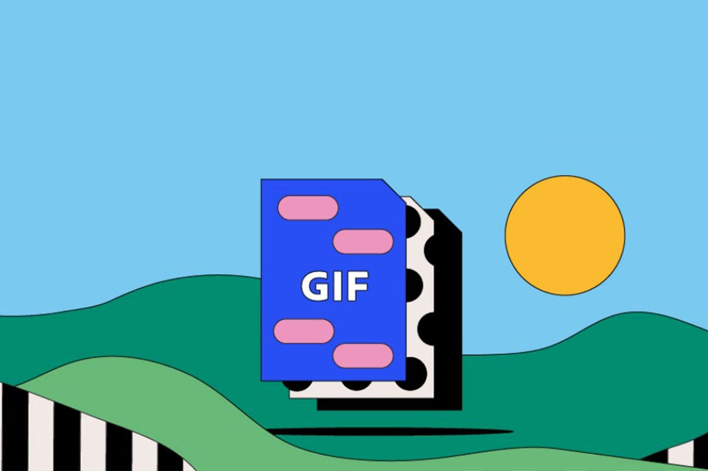

Introducción a los Formatos de Imágenes
En este sitio exploraremos los principales formatos de imágenes utilizados en la web. Cada uno de estos formatos tiene características únicas que lo hacen adecuado para diferentes usos.
JPEG (Joint Photographic Experts Group)
Características:
- Es un formato de compresión con pérdida, lo que significa que reduce el tamaño del archivo eliminando detalles de la imagen.
- Ideal para fotografías con gradientes de color.
- No soporta transparencia.
- El grado de compresión puede ser ajustado, lo que permite equilibrar la calidad y el tamaño del archivo.
Usos:
- Fotografías y imágenes con muchos colores y detalles.
- Usado principalmente en sitios web de fotografía, galerías de imágenes, etc.
- Cuando se requiere reducir el tamaño del archivo sin importar demasiado la pérdida de calidad.
Ejemplo de imagen JPEG:

PNG (Portable Network Graphics)
Características:
- Formato sin pérdida de calidad, ideal para mantener la integridad de la imagen.
- Soporta transparencia, lo que permite que las imágenes tengan fondos transparentes.
- Utiliza un algoritmo de compresión sin pérdida, lo que significa que la calidad de la imagen no se ve afectada.
- En general, los archivos PNG suelen ser más grandes que los JPEG, pero conservan toda la información original de la imagen.
Usos:
- Imágenes con áreas transparentes, como logotipos, iconos o gráficos.
- Cuando la calidad de la imagen es crucial y se necesitan imágenes sin compresión.
- Gráficos y capturas de pantalla donde se necesitan bordes nítidos y sin pérdida de calidad.
Ejemplo de imagen PNG:

GIF (Graphics Interchange Format)
Características:
- Soporta imágenes animadas, lo que lo convierte en un formato ideal para crear GIFs con movimiento.
- Limitado a una paleta de 256 colores, lo que lo hace menos adecuado para imágenes complejas o con muchos colores.
- Soporta transparencia, aunque con menos calidad que el PNG.
Usos:
- Animaciones cortas y simples.
- Memes, banners animados, y gráficos animados pequeños.
- Imágenes de baja calidad con pocos colores, pero que necesitan movimiento o animación.
Ejemplo de imagen GIF:
WebP
Características:
- Formato desarrollado por Google que ofrece una buena compresión con pérdida y sin pérdida.
- Ofrece una mejor calidad en comparación con JPEG y PNG, a un tamaño de archivo más pequeño.
- Soporta transparencia y animación, similar al PNG y GIF, respectivamente.
- No es tan ampliamente soportado por navegadores más antiguos, aunque ya es compatible con la mayoría de los navegadores modernos.
Usos:
- Imágenes en sitios web donde la velocidad de carga es crucial.
- Ideal para crear imágenes pequeñas con buena calidad, sin sacrificar la carga del sitio.
- Formato preferido en muchas plataformas debido a su excelente compresión y calidad.
Ejemplo de imagen WebP: